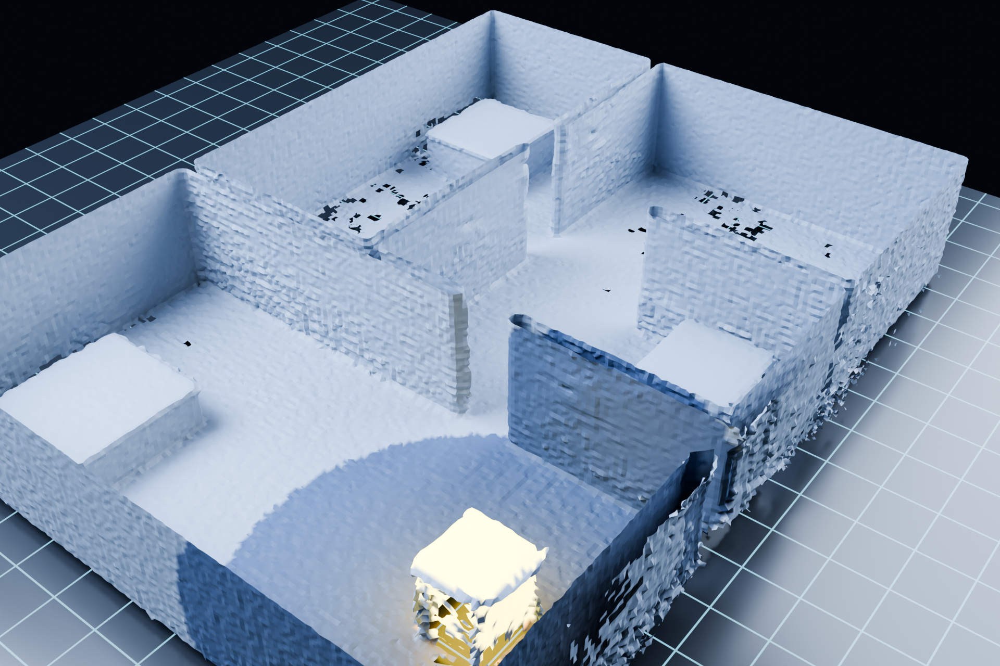
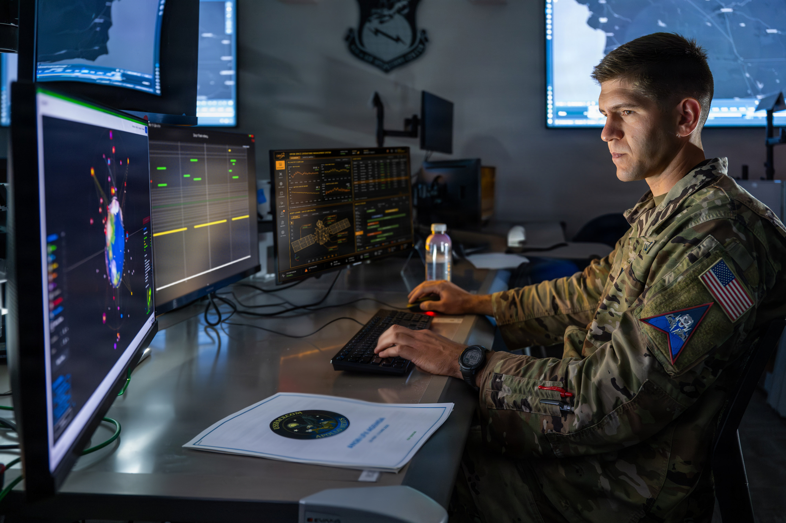
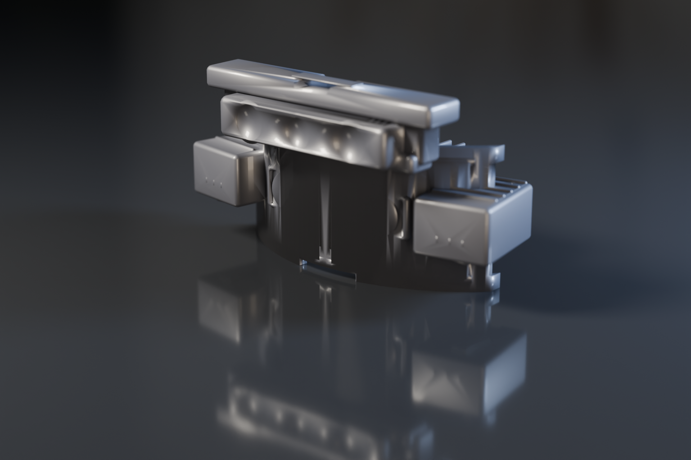
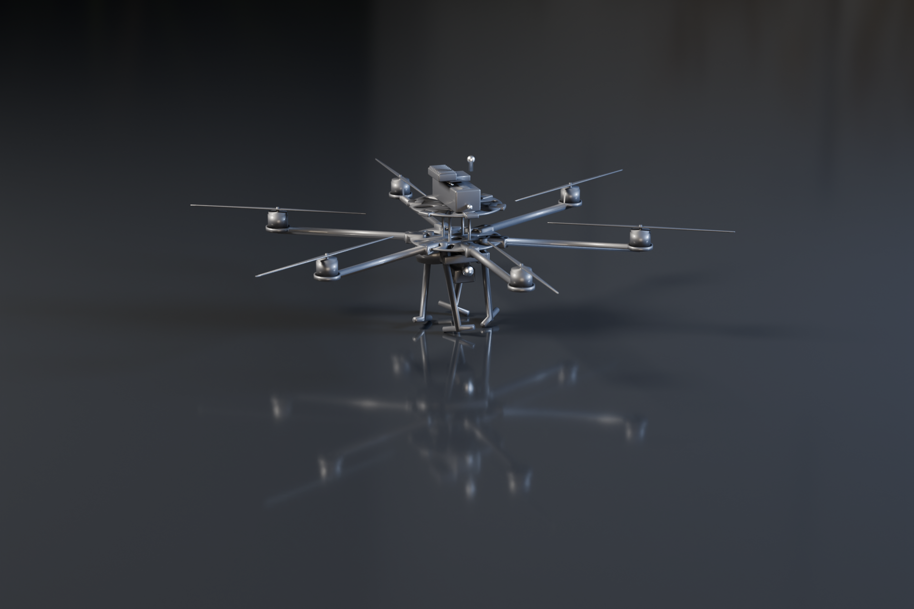
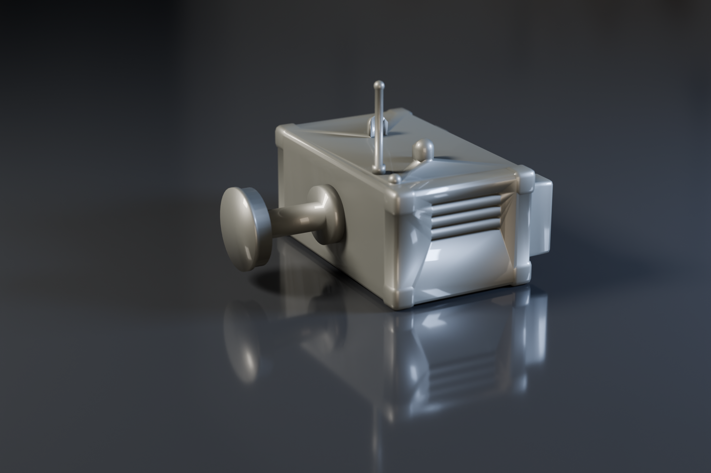
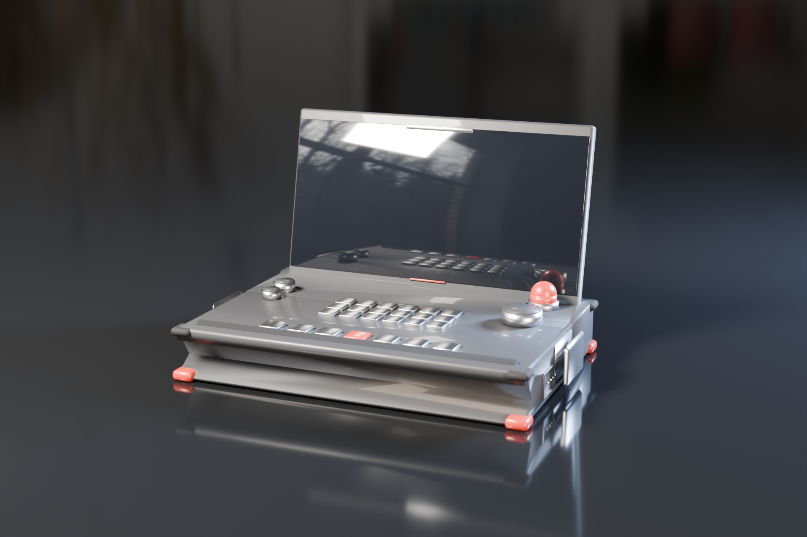
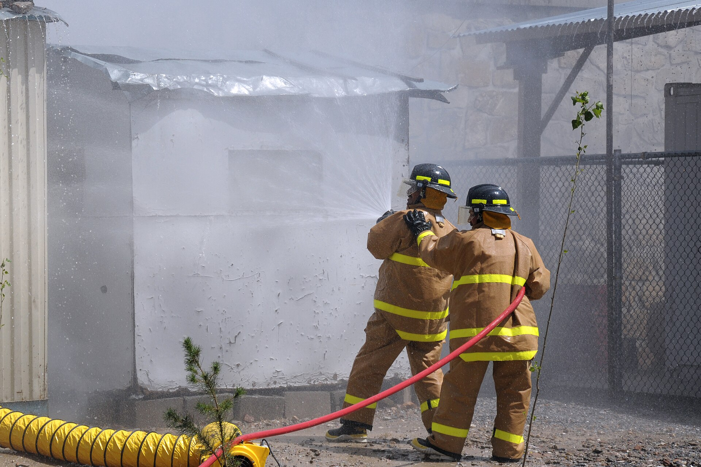
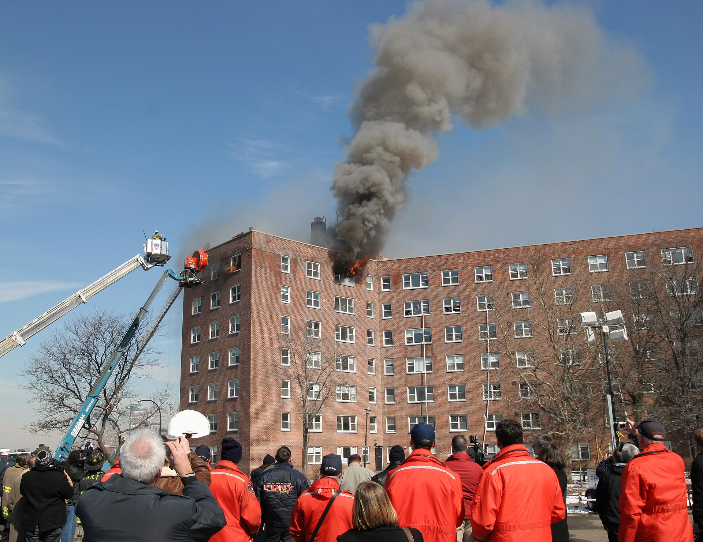
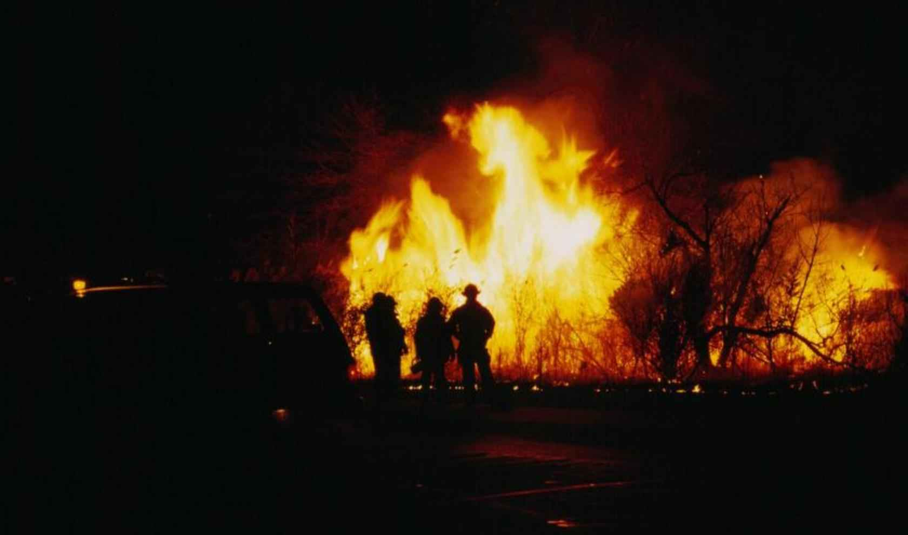

DIGITAL TWIN실시간 3D 디지털 트윈
- 드론 LiDAR + 고글 열화상 융합 표면 재구성
- 층 단면·투명도 조절, 화점·연기 시각화
- 미탐사 프런티어 자동 탐사로 빈 공간 채움
FRIZE는 소방 현장을 하나의 운영체제(Command OS)로 통합합니다. 드론·스마트고글·IoT 배연장비를 지휘 커널(CORE)이 실시간으로 묶고, 지휘관은 3D 디지털 트윈을 보며 상황을 인지하고 신속·정확하게 대원과 장비를 통제합니다.

CORE · LIVE — 4 UNITS LINKED · TWIN 97.8%드론·고글·IoT 센서를 융합해 현장을 3D로 복제합니다.
대원·드론·장비를 하나의 메시 네트워크로 연결합니다.
VLM이 영상·센서를 판단해 위험을 우선순위로 제안합니다.
생체·장비·현장 상태를 실시간 모니터링하고 경보합니다.
모든 판단·명령·상황을 자동 기록해 보고서를 생성합니다.
SCOUT 드론이 자율 비행으로 건물 외부·내부를 탐사하고 실시간 데이터를 수집합니다.
융합된 데이터를 TSDF 점유·열 복셀로 3D 재구성하고 위험 요소를 분석합니다.
지휘관이 트윈 인터페이스에서 대원·장비에 명확한 임무를 딸깍으로 지시합니다.
대원은 고글 AR 가이드를 따라 임무를 수행하고, 안전 인터록이 명령을 검증합니다.
요구조자 구조와 임무를 완료하고, 대원과 장비는 안전하게 복귀합니다.
현장의 모든 노드를 하나의 커널(CORE)이 버스로 묶습니다.

DIGITAL TWIN
VISOR-1
SCOUT-1
VENT-1
CONSOLE-1
FIELD POV현장 스캔부터 위험 분석까지
명확한 지시로 신속한 실행
적절한 의사결정·경로 안내 효과
안정적인 제어 및 모니터링
* 위 수치는 통제된 환경의 훈련 및 내부 테스트 결과이며, 실제 현장 결과와 다를 수 있습니다.

드론과 3D 트윈으로 전체 건물을 빠르게 파악하고, 대원의 진입 경로와 피난 유도·환기/배연 제어를 통합적으로 지원합니다.
